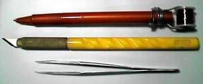

Progressive Wiring Techniques
July 14, 1997

To build a circuit board in hobby work, there are some wiring materials. I think many people are using a protobord with PTFE wire to buid a circuit board. However the PTFE wire is not suitable as wiring material for protoboard because there are following problems.
- PTFE wires on the circuit board tends to be bloated due to thickness of the insulator.
- Re-wiring an underlying wire is difficult.
- Efficiency of wiring work is not good, each end of the wire must be stripped to be solderd.
So I recommend to use a UEW for protoboard. The UEW is polyurethane enameled copper wire which is used for small inductors and transformers. This wiring method may be a minor way. However, it solves that problems, so that it is better than PTFE for wiring on the protoboard.
To wire in UEW, a wiring tool that called wiring pen is used. The wiring pen is often sold with PCB kits, however, they are not useful because its tip is dull and weak for heat :-). When you could not satisfy bought wiring pen, it can also be built yourself easy. I built a wiring pen from a cheap drawing pen.
According to some trial, 0.16 or 0.2 dia UEW is the best for the protoboad. This is equivalent to 0.5 or 0.9 mm width printed pattern. Its insuration is sufficient for low voltage circuits such as a logic board below 12 volts.

It is very easy to wire in high density layout, even if parts are mounted on the board without free space.
Left image shows the solder surface. There is a space on the board cosidering the wiring density, because the polyurethane enamel is very thin. It will become a dish of pasta easy when wire it with PTFE wire :-)

This is a wiring pen that I built.
But Recently...
In early time, I had wired in avobe method that wire it in wind-and-lead like daisy chain. However, it is not suitable for wiring random logic, analog circuit and surface mounted devices. Wiring that circuit in point-to-point like wiring with PTFE wire is better for them. Now I am working in this method. The polyurethane enamel at cutting edge of wire is weak in heat, so that pre-soldering to the UEW does not need to remove polyurethane ename. 350°C of soldering temperture is recommended for UEW.
I am using only through holed protoboard and cut leads at solder surface to zero height. This enables to wire smoothly and can prevent to damage polyurethane enamel by edge of leads.
How to mount SMD
To mount the surface mounted devices (SMD) on the protoboards, they will be mounted with pitch conversion boards. However the pitch conversion board is expensive and it requires a large footprint. This spoils the advantage what the very small footprint of the SMDs. Thus I am mounting the SMDs on the protoboard without pitch conversion board.
To achieve this method, I put a polyimide (Kapton) tape on the protoboard and bond the SMD on the tape and wire each lead. The polyimide is a one of the heat resistant materials which is used for high temperture insurator, film cable and flexible PCB. It can work up to 200°C continuous and resist soldering temperture. To solder wire and lead, pre-solder wire and lead, set wire on the lead and press the wire with a soldering iron. [Example]

{kind=link}